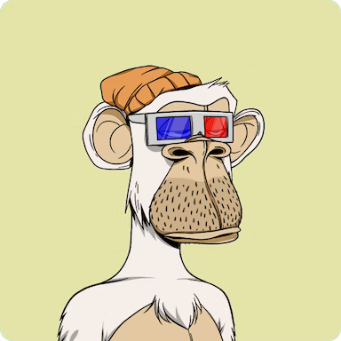
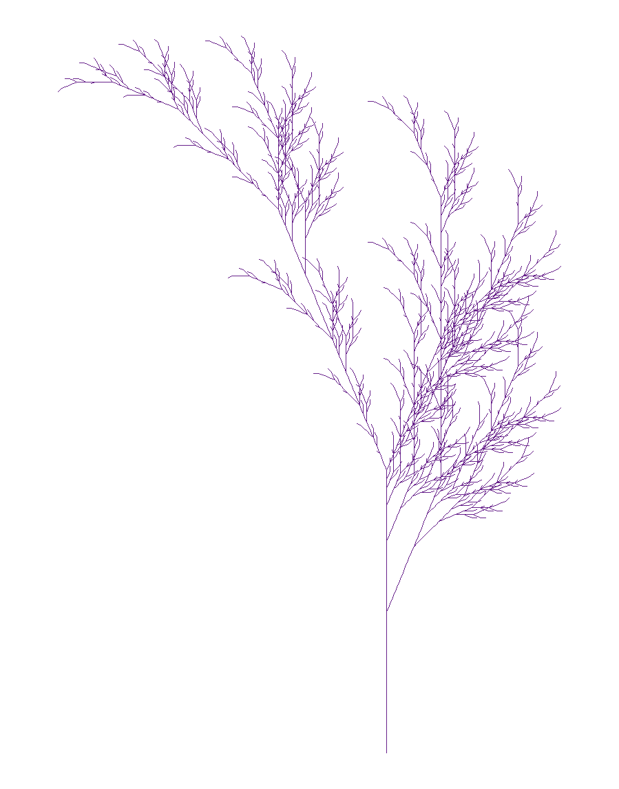

Assignment1
Generative art is art that has been create in some manner with an autonomous function. One popular example that people may be familiar with is NFT’s. Concerns about NFT’s aside, they do prove to be a great example of generative art, and the one that I will be talking about, the Bored Ape Yacht Club, is a high profile example. The Bored Apes themselves are created using an algorithm which picks the apes qualities, then combines them to create the singular NFT. 
For example, in the above Bored Ape, it has the characteristics of: Yellow Background, White Fur, Orange Beanie. Pretty much everything in the picture is pre-specified and generated through an algorithm that puts it all together.
Another Example of generative art comes from https://fronkonstin.com where one can generate some plant art that the color of change be changed. In my case, i changed the color of the plant to ‘darkorchid4’ which is a purple shade.

Finally, here is a graph that was created that is quite funny.

This graph wanted to show the percentage of voters that supported certain presidential candidates during the 2012 election. However, the figure choice is just abysmal. Giving Fox news the benefit of the doubt, we might say that the survey only asked if they supported the GOP candidates, not which one they supported over the other, thus allowing the total percentage to not be capped at 100%. That said, this would be better represented as a bar graph, that way you can display the tight race more accurately, as well as get a quick view as the most likely candidate. Putting the data into a pie chart confuses the general audience as it does not convey meaningful comparison between the candidates, as well as pie charts are generally capped at 100%. Therefore the data could be better represented as a bar graph instead of a pie chart.